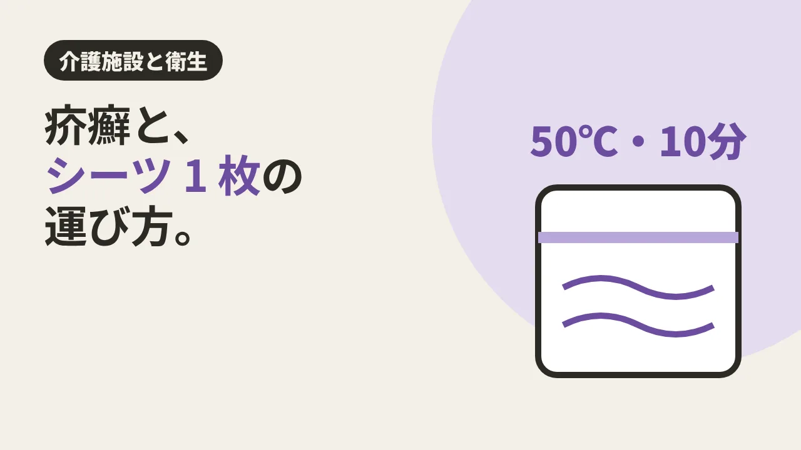

CLEAN CARE JOURNAL / 介護施設と衛生
疥癬と、シーツ 1 枚の運び方。

シーツを 1 枚はがして、洗濯室へ運ぶ。 介護施設では毎日くり返される、何でもない作業です。けれど、入居者さんに疥癬(かいせん)が見つかったとき、このシーツ 1 枚の扱い方が、ほかの人にうつすかどうかに関わってきます。
目に見えない、100 万匹
疥癬は、ヒゼンダニという小さなダニが皮膚に寄生して起こる病気です。神戸市の資料は、高齢者施設での対応(入所時の経過観察や個室対応など)を詳しく挙げています。
疥癬には、ふつうの疥癬と、角化型疥癬(ノルウェー疥癬)があります。神戸市・福岡市・名古屋大学の資料では、角化型疥癬では寄生するダニが 100 万〜200 万匹にのぼるとされ、うつる力がとても強いと書かれています。抵抗力が落ちた人に起こりやすいとされているのも、介護施設で気をつけたい理由です。
ダニは、熱に弱い
ヒゼンダニには、弱点があります。資料ではそろって、50℃・10 分ほどで死ぬとされています。名古屋大学の資料には、人の体から離れると 2〜3 日で死ぬ、という記述もあります。
そこで、角化型疥癬の人が使ったシーツや衣類について、神戸市と福岡市の資料は次のような扱いを挙げています。
- 毎日交換する。
- 運ぶときは、皮膚のくず(落屑)が飛び散らないよう、ビニール袋かふた付きの容器に入れる。
- ふつうに洗濯したあと乾燥機にかけるか、50℃・10 分の熱処理をしてから洗う。
- 部屋は、掃除機で皮膚のくずを残さず取る。
ふつうの疥癬では、福岡市の資料は「洗濯と室内の掃除は通常どおり」としています。どちらの疥癬かは医師が判断するので、扱いは施設の感染対策の担当者と医師の指示に合わせます。
どんでん返し:強い薬より、ていねいな掃除機
疥癬と聞くと、部屋じゅうを薬でまるごと消毒したくなるかもしれません。でも名古屋大学の資料は、入念な吸引清掃(掃除機がけ)が感染防止の基本で、消毒剤による環境の消毒は基本的に不要としています。ベッドや床の消毒も不要と書かれています。
一方、神戸市と福岡市の資料には、角化型疥癬の部屋に殺虫剤を散布することも挙げられています。厚生労働省の『介護現場における感染対策の手引き』(第 3 版・令和 5 年 9 月)の疥癬の項では、角化型ではこまめに掃除機をかけること、使ったリネンは落屑が飛び散らないよう袋に入れて口をしめて洗濯に出すことが書かれていて、殺虫剤の散布は挙げられていません。資料によって書き方が違い、疥癬の型や状況でも対応は変わります。薬剤を使うかどうかは施設と保健所が決めることで、清掃の担当者が自分で薬剤を選んだり散布したりはしません。
主役は、派手な薬ではなく、皮膚のくずを 1 か所も残さない掃除機と、シーツを袋に入れて運ぶ手順。地味な作業の積み重ねが、うつる道を減らしていきます。
結び:見えないものを、運ばない
ダニは目に見えません。だからこそ、目に見える手順で守ります。袋に入れる。熱を通す。掃除機で吸う。シーツ 1 枚の運び方は、入居者さんと職員さんの両方を守る仕事です。
現場では
介護施設の清掃を外部に頼むときは、疥癬の方がいる部屋について、リネンや室内の物に触れる前に、施設の感染対策責任者と清掃担当者で、必要な防護具、作業前後の手洗い、部屋を回る順序、道具、ごみやリネンの運搬方法を確認します。指示された防護を整えてから着手し、対応方法が決まっていない場合は作業を始めず、施設の責任者へ相談します。LOTUS クリーンケアサービスへのご相談でも、施設の方針と担当の方の指示を最初にうかがいます。治療や薬剤の判断は、医師・施設・保健所の役割です(介護施設の清掃・クリニックの清掃)。
今日の持ち帰り
- 角化型疥癬では、ヒゼンダニが 100 万〜200 万匹寄生するとされ、うつる力が強い(神戸市・福岡市・名古屋大学の資料)。
- ヒゼンダニは 50℃・10 分ほどで死ぬとされる。リネンは袋に入れて運び、乾燥機か熱処理を(角化型の場合の資料の例)。
- 環境の消毒より、掃除機で皮膚のくずを残さず取ることが基本とされる。どちらの疥癬かと扱いは、医師と施設の指示に合わせる。
出典:神戸市の資料(2024 年 3 月)(角化型疥癬のダニの数、潜伏期間 約 1〜2 か月・角化型は 4〜5 日、50℃・10 分、リネンの運搬・洗濯・乾燥機、掃除機、殺虫剤の散布、隔離)／福岡市保健所「疥癬」(2026 年 6 月 1 日更新)(通常疥癬と角化型疥癬の扱いの違い、50℃・10 分)／名古屋大学医学部附属病院 感染対策ガイドライン「疥癬」(人から離れて 2〜3 日、吸引清掃が基本で環境消毒は基本的に不要)／厚生労働省 老健局『介護現場における感染対策の手引き』第 3 版(令和 5 年 9 月)(疥癬の項 111〜114 ページ:角化型は手袋・使い捨ての長袖ガウン、こまめな掃除機、リネンは袋に入れて口をしめて洗濯へ、通常疥癬との違い)。2026 年 11 月 11 日閲覧。
クリーンケア専用ダイヤル070-3220-4946
※営業・勧誘のお電話はご遠慮ください